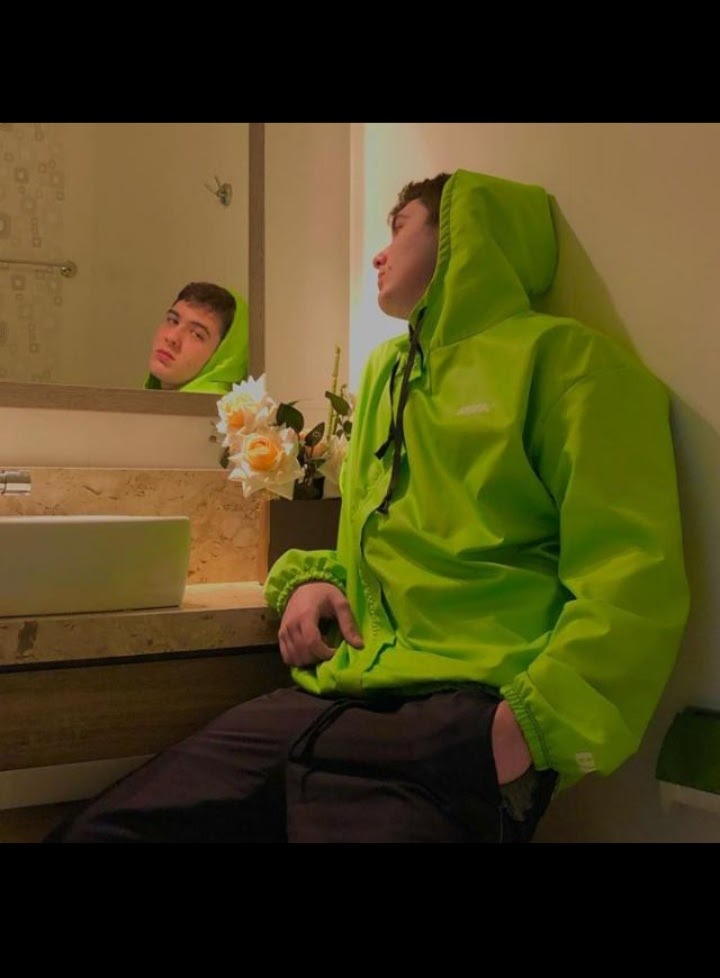

Apresentação pessoal
Meu nome é Matheus Marques, estudo na rede de ensinos médios Sesi SENAI
(escola S), em torno de 1 ano e 9 meses, estou realizando o curso
técnico da rede que contém as areas de: Dsign, Programação basica em
HTML, CSS e JS, Banco de dados, Redes e etc..

Pretendo continuar cursando e realizando principalmente a área de
programação, onde me identifico mais, e futuramente realizar um curso
superior em analise e desenvolvimento de sistemas, tanto para me
aperfeiçoar na profissão quanto para melhor oportunidades de trabalhos